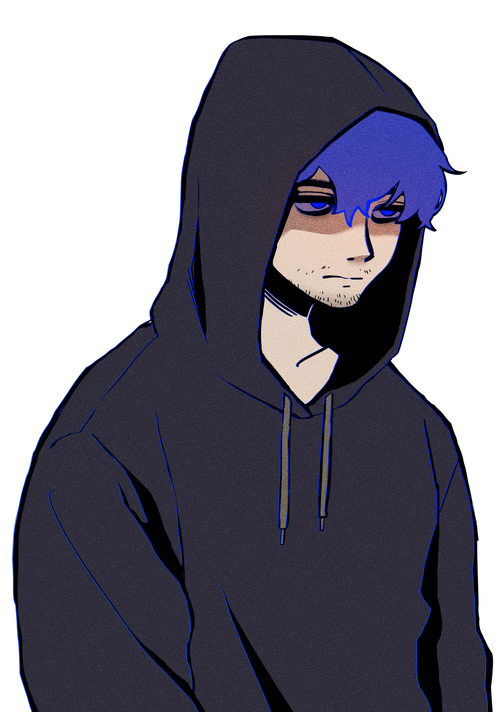
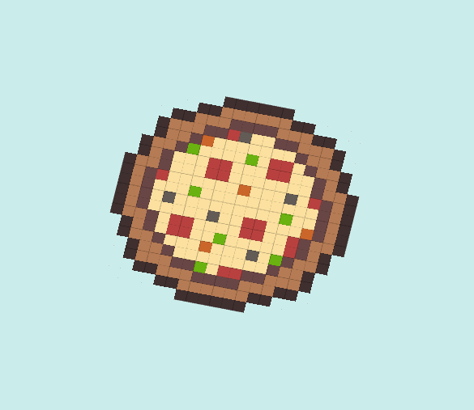

Overview
Manzo is a deep-sea rhythm adventure game blending psychological horror and exploration. Players follow mysterious Morse code messages, uncovering secrets hidden in the ocean's depths.
Features
- Rhythm-based movement
- Exploration-driven storytelling
- Dynamic underwater world
- Unique boss encounters
Experience
Position: Producer & Technical Graphics Programme (09/2024 - Present)
Responsible for project management, team communication, and technical support for the graphics pipeline.

Tasks Completed
Rendering & Optimization
Rendering System
- Designing game object and rendering systems
- Implementing layer-based rendering
- Building a rendering system using DrawCall
- Developing ShaderManager and TextureManager for resource management
Rendering Optimization
- Implementing frustum culling for optimization
- Optimization for Steam distribution
Graphics & Art
Game Art
- Character portrait drawing
- Pixel art for fish
- Interior concept art for the character’s house
UI/UX Design
- FuelUI and other UI element designs
Shader Development
- Creation of various shaders
- Post-processing implementation and design
Game System Development
Game Engine Development
- Developing a custom game engine (component-based architecture)
- Managing objects through
GameObjectManager
Collision Detection System
- Developing collision detection and correction system (
HitWithReeffunction) - Implementing continuous collision detection
Event Handling
- Improving event handling (switching SDL event processing method)
Project Management
- Distributing tasks and coordinating team work
- Supporting code merges and managing final builds
Project Details
Project Management Tool Used: Notion
Challenges & Solutions
-
Balancing Rhythm & Exploration: Integrating rhythm-based movement with free exploration was challenging, as strict rhythm constraints could make navigation frustrating. We addressed this by allowing both free movement and rhythm-enhanced dashing, ensuring fluid gameplay while preserving rhythmic engagement.
SOURCE
The source project is available on GitHub.